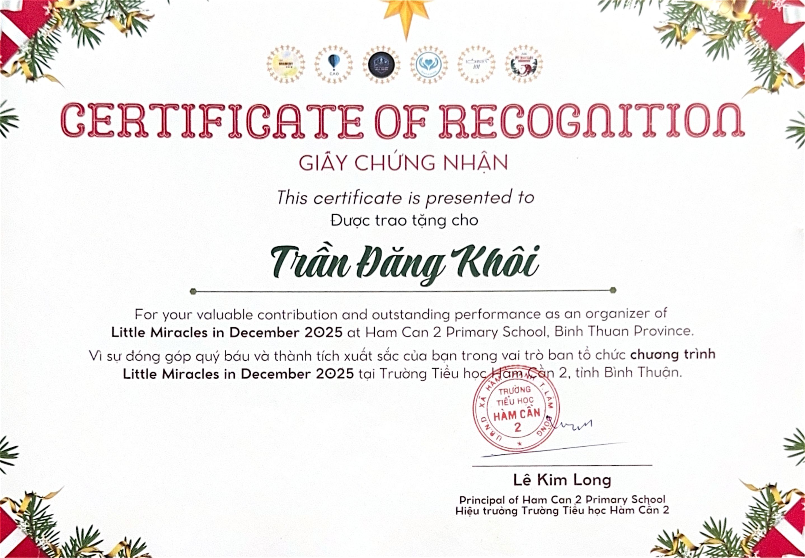

Little Miracles in December
A community outreach event at Ham Can 2 Primary School in Binh Thuan, Vietnam, on December 20, 2025.
Creating moments of joy
At Little Miracles in December 2025, I helped coordinate a Christmas outreach program for 204 ethnic-minority students at Ham Can 2 Primary School in Binh Thuan. My responsibilities included fundraising through product sales and crochet workshops, directing a Christmas musical, and organizing four interactive game booths. The event distributed more than 200 gift packages and five bicycles to students. The school recognized my contribution as an event organizer.
Moments from the school
Recognized for organizing the event
Presented to Tran Dang Khoi by Ham Can 2 Primary School in recognition of his contribution and outstanding performance as an organizer of “Little Miracles in December 2025.”
